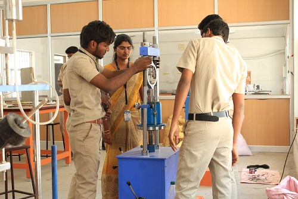
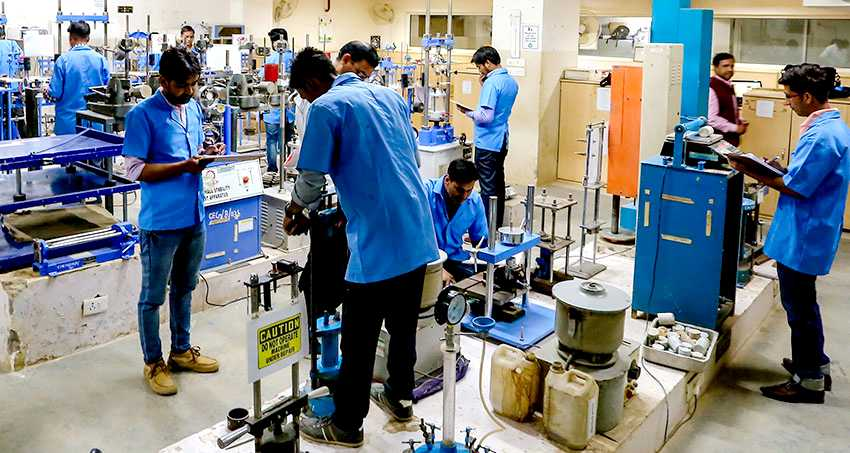
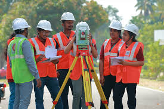
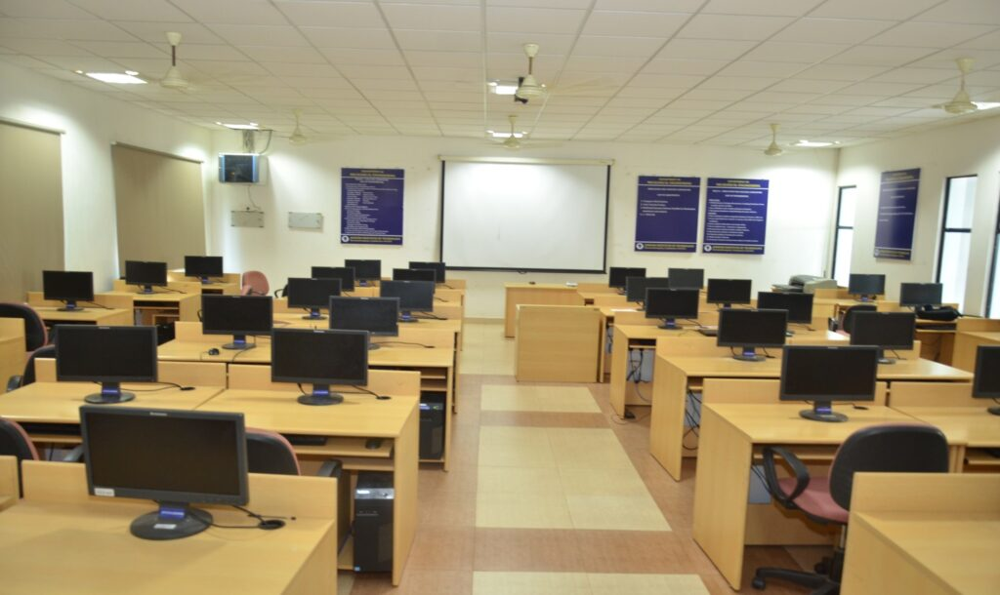
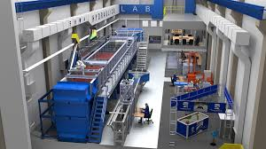
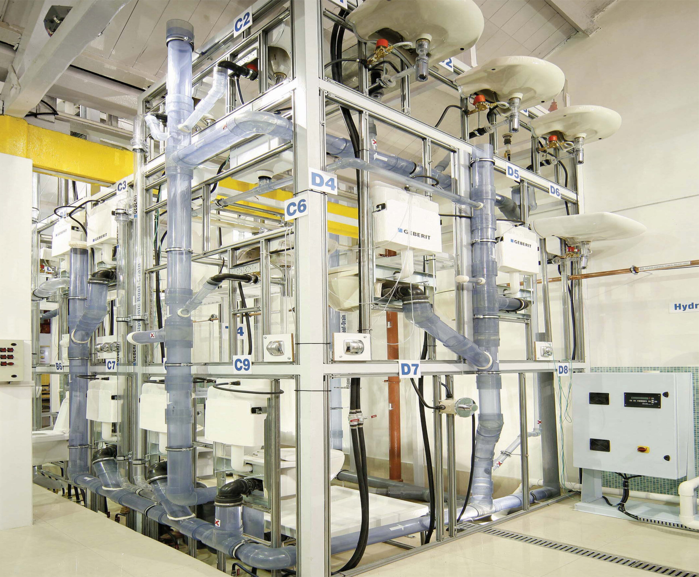

ADUSUMILLI ASWARDHA NARAYANA MURTHY&VALLURIPALLI VENKATA RAMA SESHADRI RAO
Aproved by APSBTET Mangalagiri,Vijayawada
SeshadriRao Knowledge Village,Gudlavalleru,Krishna District-521356
Civil engineers work in all aspects of planning, designing, and constructing or repairing a building or infrastructure project to ensure that structures and systems are assembled correctly. Depending on the job, civil engineers may be involved in a project from start to finish or for certain stages of it.Civil engineering is a professional engineering discipline that deals with the design, construction, and maintenance of the physical and naturally built environment, including public works such as roads,structural components of buildings, and railways.
☛The Surveying Laboratory enables students to understand and practice the basic principles of surveying by conducting field exercises using a wide spectrum of surveying equipment ranging from traditional dumpy levels, tilting level, compass, transits, digital theodolite.
☛This laboratory covers data collection methods including surveying, profile leveling, contouring, compass traversing, laying out of curves, base line measurement and triangulation.Surveying laboratory is to make student familiar and competent enough to draw map in suitable scale by using different surveying instruments.
☛Material Testing Laboratory is a well equipped laboratory which provides ideas on the practical knowledge of test several properties of material like ductility, surface roughness, malleability, hardenability etc.
☛materials testing, measurement of the characteristics and behaviour of such substances as metals, ceramics, or plastics under various conditions. The data thus obtained can be used in specifying the suitability of materials for various applications.
☛The document provides information on various aspects of building construction including setting out of buildings, different types of footings and columns, bulking of sand, brick bonds and arrangements, reinforcement cutting and placement.
☛ It discusses setting out the centre line and foundation plan, types of footings including spread footings and columns, how finer sands bulk more than coarse sands due to increased surface area, different brick bonds like English and Flemish bonds, cutting and hooking reinforcement bars, and arranging bars in slabs, beams and columns.
☛The lab facilitates the practicals for the course work of UG students. It expediates the computation platform to execute simulation, modelling, analyses related to the research work of UG, PG, PhD students of the department.CAD/CAM Lab is equipped with the latest Machines Tools and Design Software & Simulation tools with Hy-Tech CNC Turning & Milling machines.
☛Its provide hands exposures on Milling & Turning machine which has PCL interface to M-code and G-code, also has flagship CAD/CAM software packages and high end CAD/CAM workstations to meet the present industrial requirements.
☛The Hydraulics Laboratory is a state-of-the art facility used to conduct a variety of experiments pertaining to water. Among other things, this laboratory provides a means of testing the hydraulic properties of submerged bridges and the hydraulic properties of highway drainage structures and stream crossings.
☛The laboratory provides operational engineers with the design tools needed to complete their tasks.The Hydraulics Laboratory consists of a physical modeling facility and a numerical modeling facility that work in tandem. one extrapolates results, and the other verifies and calibrates the results.
☛The laboratory of plumbing represents a practical training on plumbing installations. The laboratory consisting of three simulation models for plumbing systems, a model of plumbing infrastructure installations of a small city, residential buildings simulation model & services area model.
☛Plumbing uses pipes, valves, plumbing fixtures, tanks, and other apparatuses to convey fluids. Heating and cooling, waste removal, and potable water delivery are among the most common uses for plumbing, but it is not limited to these applications.